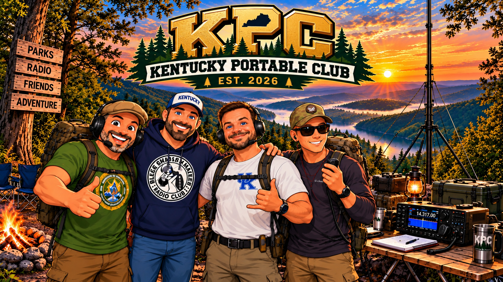

01
Outdoor Adventure
We combine amateur radio with camping, hiking, exploring, and discovering Kentucky's parks, lakes, forests, trails, wildlife areas, and other public lands.
KENTUCKY PORTABLE CLUB
We combine amateur radio, outdoor adventure, and Kentucky's incredible public lands to build a welcoming portable-radio community.
KPC exists to make portable amateur radio easier to discover, easier to enjoy, and more connected to the places we love. We believe a radio does not have to stay in the shack — some of the best operating happens outside.
We combine amateur radio with camping, hiking, exploring, and discovering Kentucky's parks, lakes, forests, trails, wildlife areas, and other public lands.
We promote POTA, SOTA, field operations, park activations, and other forms of portable amateur radio. Whether you carry a full station or a simple setup, the goal is to get outside and operate.
We use amateur radio as a way to explore and showcase Kentucky — from state parks and forests to rivers, lakes, caves, waterfalls, trails, and lesser-known places worth discovering.
We bring operators together to share knowledge, equipment ideas, locations, operating techniques, safety practices, and good stories while making new friends along the way.
KPC is about the experience that happens around the radio. A portable activation can turn into a hike, a camping trip, a sunrise, a new park discovery, or a day spent learning something you did not know before.
We want to encourage operators to explore responsibly, respect public lands, practice good operating habits, and enjoy the outdoors while making contacts from some of Kentucky's most interesting locations.
We want to make portable amateur radio approachable for everyone. New operators should be able to find practical information without feeling overwhelmed, while experienced operators should have useful resources, new places to explore, and opportunities to help others.
KPC will continue building guides, field resources, events, destination ideas, and club activities that help turn “I should try portable” into “Let's go operate.”
Our focus is simple: take the hobby outdoors, make it welcoming, and help operators get more out of every trip.
Share practical information about antennas, power, radios, logging, propagation, setup, and operating techniques that work in the field.
Find parks, forests, trails, wildlife areas, public lands, and other destinations that make great portable-radio adventures.
Put the equipment to work. Make contacts, activate parks, experiment with your station, and learn what works for you.
Help the next operator. Share what you learned, what you packed, what worked, and what you would do differently next time.
You do not need a perfect station, years of experience, or a long list of activations to be part of KPC.
Learn the basics, ask questions, build confidence, and discover how approachable portable amateur radio can be.
Bring your knowledge, field-tested equipment ideas, operating experience, and the lessons you've picked up along the way.
If POTA, SOTA, field operations, antennas, batteries, logging, and finding new activation locations are your thing, you're in the right place.
You can start with the outdoors. If you enjoy Kentucky's parks, trails, forests, lakes, and public lands, KPC gives you another reason to explore them.
Portable radio is more than making contacts. It is the whole experience of getting ready, getting outside, operating, and bringing what you learned back to the community.
Learn your equipment, understand the basics, and pick up practical field knowledge from other operators.
Build a station that fits the trip. Radio, antenna, power, logging, safety gear, and the things that make the day easier.
Choose somewhere worth going. Kentucky has plenty of places to discover before the first contact is ever made.
Set up, get on the air, make contacts, experiment, and enjoy the challenge of working portable.
Tell someone what worked, what failed, and what you learned. Every field experience can help the next operator.
The people who helped establish the Kentucky Portable Club and set its direction from the beginning.

Get to know the founders, their favorite things, and the experiences that helped shape Kentucky Portable Club.
Good portable operation starts with good stewardship. We encourage safe, responsible use of public lands, respect for other visitors, awareness of local rules and restrictions, and leaving every location as we found it — or better.
You do not have to be an expert to participate. KPC is built around operators helping operators. Bring your experience, your questions, your favorite setup, or simply your curiosity. There is always something new to learn in the field.
Explore Kentucky, bring your radio, and find your next portable adventure with KPC.